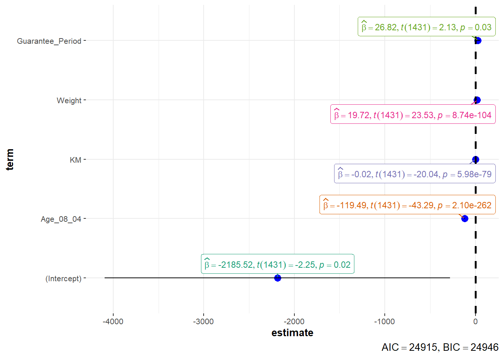

pacman::p_load(readxl, performance, parameters, see, readr, ggstatsplot, tidyverse) Visualising Models
Hands-on Exercise 4.2 : Fundamentals of Visual Analytics
1. OVERVIEW
This study explores approaches to visualise model diagnostic and model parameters by using parameters package to :
- Build a model to discover factors affecting prices of used-cars by taking into consideration a set of explanatory variables.
2. R PACKAGE REQUIRED
2.1 Load R Packages
3. DATA PREPARATION
3.1 Acquire Data Source
This study will be based on Toyota Corolla dataset.
3.2 Import Data
3.2.1 Import attribute data
Show the code
car_resale <- read_xls("data/ToyotaCorolla.xls",
"data")
problems(car_resale)Notice that the output object car_resale is a tibble data frame.
3.2.2 Identify variables’ type
Show the code
glimpse(car_resale, 70)Rows: 1,436
Columns: 38
$ Id <dbl> 81, 1, 2, 3, 4, 5, 6, 7, 8, 44, 45, 46, 47,…
$ Model <chr> "TOYOTA Corolla 1.6 5drs 1 4/5-Doors", "TOY…
$ Price <dbl> 18950, 13500, 13750, 13950, 14950, 13750, 1…
$ Age_08_04 <dbl> 25, 23, 23, 24, 26, 30, 32, 27, 30, 27, 22,…
$ Mfg_Month <dbl> 8, 10, 10, 9, 7, 3, 1, 6, 3, 6, 11, 10, 6, …
$ Mfg_Year <dbl> 2002, 2002, 2002, 2002, 2002, 2002, 2002, 2…
$ KM <dbl> 20019, 46986, 72937, 41711, 48000, 38500, 6…
$ Quarterly_Tax <dbl> 100, 210, 210, 210, 210, 210, 210, 210, 210…
$ Weight <dbl> 1180, 1165, 1165, 1165, 1165, 1170, 1170, 1…
$ Guarantee_Period <dbl> 3, 3, 3, 3, 3, 3, 3, 3, 3, 3, 3, 3, 3, 3, 3…
$ HP_Bin <chr> "100-120", "< 100", "< 100", "< 100", "< 10…
$ CC_bin <chr> "1600", ">1600", ">1600", ">1600", ">1600",…
$ Doors <dbl> 5, 3, 3, 3, 3, 3, 3, 3, 3, 5, 5, 5, 5, 5, 5…
$ Gears <dbl> 5, 5, 5, 5, 5, 5, 5, 5, 5, 5, 5, 5, 5, 5, 5…
$ Cylinders <dbl> 4, 4, 4, 4, 4, 4, 4, 4, 4, 4, 4, 4, 4, 4, 4…
$ Fuel_Type <chr> "Petrol", "Diesel", "Diesel", "Diesel", "Di…
$ Color <chr> "Blue", "Blue", "Silver", "Blue", "Black", …
$ Met_Color <dbl> 1, 1, 1, 1, 0, 0, 0, 1, 1, 0, 0, 0, 1, 1, 1…
$ Automatic <dbl> 1, 0, 0, 0, 0, 0, 0, 0, 0, 0, 0, 0, 0, 0, 0…
$ Mfr_Guarantee <dbl> 0, 0, 0, 1, 1, 1, 0, 0, 1, 1, 1, 0, 0, 1, 1…
$ BOVAG_Guarantee <dbl> 0, 1, 1, 1, 1, 1, 1, 1, 1, 1, 1, 1, 1, 1, 1…
$ ABS <dbl> 1, 1, 1, 1, 1, 1, 1, 1, 1, 1, 1, 1, 1, 1, 1…
$ Airbag_1 <dbl> 1, 1, 1, 1, 1, 1, 1, 1, 1, 1, 1, 1, 1, 1, 1…
$ Airbag_2 <dbl> 1, 1, 1, 1, 1, 1, 1, 1, 1, 1, 1, 1, 1, 1, 1…
$ Airco <dbl> 1, 0, 1, 0, 0, 1, 1, 1, 1, 1, 1, 1, 1, 1, 1…
$ Automatic_airco <dbl> 1, 0, 0, 0, 0, 0, 0, 0, 0, 0, 0, 1, 0, 0, 0…
$ Boardcomputer <dbl> 0, 1, 1, 1, 1, 1, 1, 1, 1, 1, 1, 1, 1, 1, 1…
$ CD_Player <dbl> 1, 0, 1, 0, 0, 0, 0, 0, 1, 0, 0, 0, 1, 0, 1…
$ Central_Lock <dbl> 1, 1, 1, 0, 0, 1, 1, 1, 1, 1, 1, 1, 1, 1, 1…
$ Powered_Windows <dbl> 1, 1, 0, 0, 0, 1, 1, 1, 1, 1, 1, 1, 1, 1, 1…
$ Power_Steering <dbl> 1, 1, 1, 1, 1, 1, 1, 1, 1, 1, 1, 1, 1, 1, 1…
$ Radio <dbl> 0, 0, 0, 0, 0, 0, 0, 0, 0, 0, 0, 0, 0, 0, 0…
$ Mistlamps <dbl> 0, 0, 0, 0, 0, 1, 1, 0, 0, 0, 0, 0, 0, 0, 0…
$ Sport_Model <dbl> 0, 0, 0, 0, 0, 0, 0, 1, 0, 1, 1, 0, 1, 1, 1…
$ Backseat_Divider <dbl> 0, 1, 1, 1, 1, 1, 1, 1, 1, 1, 1, 1, 1, 1, 1…
$ Metallic_Rim <dbl> 0, 0, 0, 0, 0, 0, 0, 0, 0, 0, 0, 0, 0, 0, 0…
$ Radio_cassette <dbl> 0, 0, 0, 0, 0, 0, 0, 0, 0, 0, 0, 0, 0, 0, 0…
$ Tow_Bar <dbl> 0, 0, 0, 0, 0, 0, 0, 0, 0, 0, 0, 0, 0, 0, 0…Remarks :
The type of key variables ( Price, Age_08_04, Mfg_Year, KM, Weight, Guarantee_Period ) are dbl type.
4. MODEL VISUALISATION
4.1 Calibrate Multiple Regression Model with lm( ) function
model <- lm(Price ~ Age_08_04 +
Mfg_Year +
KM +
Weight +
Guarantee_Period,
data = car_resale)
model
Call:
lm(formula = Price ~ Age_08_04 + Mfg_Year + KM + Weight + Guarantee_Period,
data = car_resale)
Coefficients:
(Intercept) Age_08_04 Mfg_Year KM
-2.637e+06 -1.409e+01 1.315e+03 -2.323e-02
Weight Guarantee_Period
1.903e+01 2.770e+01 Remarks :
From the output below, noticed the amount of details revealed with the summary() function is more comprehensible than the output above.
Residuals are the difference between the actual observed prices and the prices the model predicted. Based on the 5 summary points, the distribution of residuals is not strongly symmetrical. This can be interpreted as certain points predicted by this model being off from the actual observed points.1 Further visual plots will be required to verify the normal distribution.
Coefficient represents the intercept and slope for a linear model.
The Estimate column consists of intercept (first row) and the rest as the factors. The intercept value -$2.637e+06 is the expected price considering the average of each predictor. For example, for every KM increase, the price will drop further at the rate of -$2.323e-02. However, the Standard Error indicates that the price reduction rate can vary up to $1.163e-03. This Standard Error value can also use to compute the Confidence Intervals and Statistical Test when hypotheses the relationship between “KM” and “Price”.
The T value, a measurement of how many standard deviations away from 0, suggests whether the null hypothesis should be rejected. KM with T value of -$19.969, which is greater than the standard error, and 0 means a relationship exists between KM and Price, and the null hypothesis can be rejected. This rejection can be further justified by the small Pr(>|t|) value and the 3 asterisks next to the p-value.
Residual Standard Error measures the quality of a linear regression fit. It is an average value that the price can deviate from the true regression line. For example, given the mean price based on the predictors involved is -$2.637e+06 and the Residual Standard Error is $1,366, the percentage error based on 1,430 degrees of freedom is -0.0518%.
1,430 degrees of freedom refers to 1430 data points that went into estimating the parameters used. Meaning removed 6 parameters (5 variables and an intercept) from the 1436 observation points.
R-squared statistic measures how well the model fits with actual data. Given the Multiple R-squared is 0.8586, that means 85.86% of the price variance can be explained by the predictor variables. However, this value will increase when more predictor variables are added to the model. Hence, the adjusted R-squared value will be considered instead.
F-statistic, an indicator of the relationship between predictors and response variables, is 1,737 on 5, which is greater than 1,430 degrees of freedom. Hence, this is sufficient to reject the null hypothesis (H0 : There is no relationship between price and predictor).
F-statistic should ideally befurther from 1.
How much larger F-statistics depend on the number of data points and predictors. Generally, for large datasets, it is sufficient to reject so long the F-statistics > 1.
summary(model)
Call:
lm(formula = Price ~ Age_08_04 + Mfg_Year + KM + Weight + Guarantee_Period,
data = car_resale)
Residuals:
Min 1Q Median 3Q Max
-10426.3 -737.3 -6.4 739.1 6591.4
Coefficients:
Estimate Std. Error t value Pr(>|t|)
(Intercept) -2.637e+06 2.618e+05 -10.072 <2e-16 ***
Age_08_04 -1.409e+01 1.081e+01 -1.304 0.1924
Mfg_Year 1.315e+03 1.307e+02 10.064 <2e-16 ***
KM -2.323e-02 1.163e-03 -19.969 <2e-16 ***
Weight 1.903e+01 8.129e-01 23.405 <2e-16 ***
Guarantee_Period 2.770e+01 1.219e+01 2.272 0.0232 *
---
Signif. codes: 0 '***' 0.001 '**' 0.01 '*' 0.05 '.' 0.1 ' ' 1
Residual standard error: 1366 on 1430 degrees of freedom
Multiple R-squared: 0.8586, Adjusted R-squared: 0.8581
F-statistic: 1737 on 5 and 1430 DF, p-value: < 2.2e-16Remarks :
To optimise a model, can try with the following code chunk -
model2 <- lm( log(price) ~ c(predictors), data = car_resale)
4.2 Model Diagnostic
4.2.1 Check Multicollinearity
check_collinearity(model)# Check for Multicollinearity
Low Correlation
Term VIF VIF 95% CI Increased SE Tolerance Tolerance 95% CI
Guarantee_Period 1.04 [1.01, 1.17] 1.02 0.97 [0.86, 0.99]
Age_08_04 31.07 [28.08, 34.38] 5.57 0.03 [0.03, 0.04]
Mfg_Year 31.16 [28.16, 34.48] 5.58 0.03 [0.03, 0.04]
High Correlation
Term VIF VIF 95% CI Increased SE Tolerance Tolerance 95% CI
KM 1.46 [1.37, 1.57] 1.21 0.68 [0.64, 0.73]
Weight 1.41 [1.32, 1.51] 1.19 0.71 [0.66, 0.76]4.2.2 Visualise VIF Distribution
check_c <- check_collinearity(model)
plot(check_c)
4.2.3 Check Normality Assumption
There are 3 steps involved to visualise the normality assumption check.
4.2.3.1 Trim model
“Mfg_Year” variable is removed from this new model due to its high VIF value.
model1 <- lm(Price ~ Age_08_04 + KM + Weight + Guarantee_Period,
data = car_resale)4.2.3.2 Check Normality Assumption
check_n <- check_normality(model1)4.2.3.3 Visualise the Assumption Check
plot(check_n)
4.2.4 Check Homogeneity of Variances
check_h <- check_heteroscedasticity(model1)plot(check_h)
4.2.5 Model Diagnostic at One Go
check_model(model1,
panel = TRUE,
check = "all")5. VISUALISE REGRESSION PARAMETERS
5.1 Visualise with see & parameters packages
Show the code
plot(parameters(model1))
5.2 Visualise with ggcoefstats( ) function
Show the code
ggcoefstats(model1,
output = "plot")
Footnotes
Felip R. (2015). QUICK GUIDE: INTERPRETING SIMPLE LINEAR MODEL OUTPUT IN R. https://feliperego.github.io/blog/2015/10/23/Interpreting-Model-Output-In-R↩︎